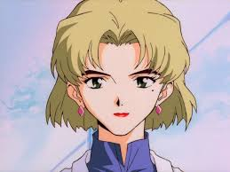

|  |
30 лет. Глава научного отдела Nerv.
Рицуко — трудоголик и заядлый курильщик, любит кошек. Дружит с Мисато и Рёдзи со времён колледжа. К приставаниям Рёдзи относится нейтрально, похоже это давний способ дразнить Мисато. Иногда проявляет жестокость и хладнокровность, как и Гэндо Икари.
Рицуко, также как Гэндо и Фуюцуки, в полной мере известна истинная природа Евангелионов и Рэй. Рицуко знает о Проекте Содействия, но в какой мере — неизвестно. В юности стала свидетельницей отношений своей матери и Гэндо. После допроса Seele, она морально ломается, чувствует, что Гэндо её предал и использует её точно таким же образом, как и её мать.
В отместку или в приступе отчаяния, она уничтожает запасники псевдопилота. В 24-й серии выясняется, что она, так же как и её мать, была любовницей Гэндо Икари. Рицуко застрелят в «The End of Evangelion», когда она безуспешно попытается запустить самоуничтожение штаба Nerv, чтобы не дать Гэндо начать Третий удар.
В манге Рицуко Акаги куда более негативно относится к Рэй и при вспышке гнева даже пытается задушить её ремнём. Связано это с тем, что она лично засвидетельствовала самоубийство своей матери из-за первой Аянами.
Приметы: Крашеная блондинка, в юности брюнетка с оттенком красного, стрижка средней длины, чёткие брови, тёмно-зелёные глаза, родинка в уголке левого глаза. Красит губы, даже когда в этом нет необходимости, все время носит ромбические сиреневые серьги. Женственна, но неэмоциональна,
из-за чего лицо почти постоянно несёт выражение какой-то скорби, усталости или грусти. |